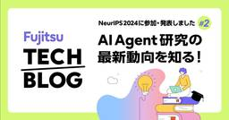
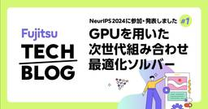

fltech - 富士通研究所の技術ブログ
https://blog.fltech.dev/
富士通研究所の研究員がさまざまなテーマで語る技術ブログ
フィード

NeurIPS 2024に参加・発表しました #2 ～AI Agent 研究の最新動向を知る！～
fltech - 富士通研究所の技術ブログ
はじめに こんにちは、人工知能研究所の村田です。入社してまだ1年目の私ですが、若手を対象とした海外研修制度の一環で、2024年12月10日から15日にカナダのバンクーバーで開催された国際会議 NeurIPS 2024（正式名称：Annual Conference on Neural Information Processing System）に聴講参加しました。私以外のメンバーも現地参加・発表をしており、NeurIPS 2024 で得られた知見、発表内容などをまとめた記事について連載で投稿しています。第2回目となる本投稿では、口頭発表セッションが満席となるほどに注目度の高い技術である、AI A…
4日前

NeurIPS2024に参加・発表しました #1 ~GPUを用いた次世代組み合わせ最適化ソルバー~
fltech - 富士通研究所の技術ブログ
はじめに こんにちは、富士通人工知能研究所の市川佑馬です。 私は、卓越社会人制度と呼ばれる富士通の独自制度を利用して東大で博士学生として通いながら富士通に勤務をしています。 富士通では主に深層学習や組み合わせ最適化のアルゴリズム開発を行っています。今回、私が開発した組み合わせ最適化に関する技術である「Controlling Continuous Relaxation for Combinatorial Optimization」が機械学習の国際会議 Neural Information Processing Systems (NeurIPS) 2024に採択され、12月にカナダのバンクーバーで…
6日前

PRICAI 2024で"A Statistical Analysis of LLMs' Self-Evaluation Using Proverbs"について発表しました
fltech - 富士通研究所の技術ブログ
こんにちは、富士通研究所人工知能研究所の園田亮介です。 富士通研究所では、LLMの文化・人口属性におけるバイアスに関する研究開発を行っており、このたび我々の研究を京都で開催された国際会議 PRICAI2024にて発表しましたのでその内容を紹介します。 タイトル: A Statistical Analysis of LLMs' Self-Evaluation Using Proverbs 国際会議: The Pacific Rim International Conference on Artificial Intelligence 著者: Ryosuke Sonoda (Fujitsu Lim…
12日前
宅配便ロッカー利用だけで、街に緑が増える！？ ～市民の脱炭素アクション効果可視化実証について～
fltech - 富士通研究所の技術ブログ
こんにちは、コンバージングテクノロジー研究所の石橋です。 川崎市様、ヤマト運輸様、Packcity Japan 様と川崎市市制 100 周年をきっかけにスタートした「かわさき脱炭素プロジェクト」において、市民の脱炭素アクションとその効果を街全体として見える化する取り組みを実施したので、その概要と活用技術についてご紹介します。
12日前
いたちごっこにさようなら！定量評価可能なビデオ映像のプライバシー保護技術を開発しました！
fltech - 富士通研究所の技術ブログ
こんにちは。富士通のデータ＆セキュリティ研究所の牛田芽生恵です。 富士通では複数のビデオ映像を利用したマルチカメラトラッキングの研究開発をしています。 また、ビデオ映像を用いた行動分析技術にも力を入れています。 ビデオ映像を利活用する際に大切なことのひとつは、ビデオに映る生活者のみなさんのプライバシーをしっかりと守ることです。 しかし、ビデオ映像に対するプライバシー保護手法は、世の中に多数存在するものの、場当たり的な手法が多く、攻撃とのいたちごっこが続いています。というのも、どのような手法でプライバシーを保護すれば、どのような性質のプライバシーが、どの程度守られるのかという定量的な評価がなされ…
1ヶ月前
SC24に参加・発表しました#3 ～FUJITSU-MONAKAプロセッサとArmエコシステムへの貢献～
fltech - 富士通研究所の技術ブログ
こんにちは、富士通研究所 先端技術開発本部の忽滑谷淳史、石井伴旺、藤原慎之介です。2024年11月17日～22日にアトランタ（アメリカ合衆国）で開催されたスーパーコンピュータの国際会議SC24にブース展示説明員として参加し、FUJITSU-MONAKAプロセッサの展示と関連技術の動向調査を行いました。富士通研究所からは複数のメンバーが現地参加しており、SC24で得られた知見などをまとめた記事について連載で投稿しています。第3回目となる本投稿では、Armベースの次世代プロセッサ「FUJITSU-MONAKA」の展示内容と関連する動向について報告します。
1ヶ月前
SC24に参加しました！#2 ～超伝導量子コンピュータの展示
fltech - 富士通研究所の技術ブログ
初めまして、量子研究所の中田です。私は今年の春まで大学に勤めていましたが、2024年3月から富士通の量子研究所でお世話になっています。前職では物性物理学を専門にしており、レーザーや放射光などさまざまな波長の光を用いて高温超伝導体などの量子物質を研究していました。物性物理で扱うような相互作用する量子多体系は古くから知られる物理学の難問のひとつですが、そのような問題に対して量子計算の有用性が議論されていることから量子コンピュータに興味を持ちました。私は実験装置を扱いながら研究を進めてきた背景もあり、これまでに培った低温技術や超伝導の知見を活かしながら、実際に自分で超伝導量子コンピュータのハードウェ…
1ヶ月前
SC24 Report - Showcasing technologies for more convenient and efficient use of supercomputers
fltech - 富士通研究所の技術ブログ
Introduction Hello, I'm Hiroki Ohtsuji from the Computing Laboratory at Fujitsu Research. Today, I would like to share my report on attending the ACM/IEEE SC24 (officially known as The International Conference for High Performance Computing, Networking, Storage, and Analysis) held in Atlanta, Georgi…
1ヶ月前
SC24に展示・発表しました #1 ～スパコンをより便利かつ効率的に使うための技術を展示
fltech - 富士通研究所の技術ブログ
はじめに こんにちは、富士通研究所 コンピューティング研究所の大辻弘貴です。今回は、ジョージア州アトランタで開催されたACM/IEEE SC24（正式名称：The International Conference for High Performance Computing, Networking, Storage, and Analysis）の参加報告をお届けします。この会議は、スーパーコンピュータに関する世界最大の国際会議であり、AI Computer Broker（ブログ記事, 動画, PDF）やインタラクティブHPC（動画, PDF）をはじめとする技術の展示や発表を行いました。
1ヶ月前
Fujitsu's most advanced technologies are summarized and published! Fujitsu Technology Strategy Briefing
fltech - 富士通研究所の技術ブログ
Hello. This is Teranishi from the Research transformation Office. At the Fujitsu Technology Strategy Briefing held on December 12, 2024, we unveiled AI Agent and other cutting-edge technologies. Here are the in-depth articles on Fujitsu's most recommended technology. Please refer to the link below f…
2ヶ月前
Multi-AI agent security technology to protect against vulnerabilities and new threats
fltech - 富士通研究所の技術ブログ
Hello, we are Andrés and Roman from Data & Security Research Laboratory. We believe that Generative AI can be a positive tool to enhance the cyber security readiness of organizations across the world, but also that these tools need to be protected from misuse and attacks. For these reasons, our team…
2ヶ月前
脆弱性や新たな脅威への事前対策を支援するマルチAIエージェントセキュリティ技術
fltech - 富士通研究所の技術ブログ
こんにちは、私たちはFRE(Fujitsu Research of Europe; 欧州富士通研究所)のデータ&セキュリティ研究所のAndrésとRomanです。私たちは生成AIが世界中の組織のサイバーセキュリティ対応力を強化するためのポジティブなツールになりうると信じています。しかし同時に、これらのツールは悪用や攻撃から保護される必要もあります。こうした背景から、私たちのチームは生成AIをセキュリティ面でサポートする2つの技術の開発に取り組んできました。この投稿ではその詳細について紹介したいと思います。 更新履歴 ・2024/12/13 関連リンクにマルチAIエージェントセキュリティ技術の説…
2ヶ月前
Demonstration of Ocean Digital Twin Technology at Nationally Certified Sustainably Managed Natural Site in Ishigaki Island
fltech - 富士通研究所の技術ブログ
Hello, this is Iida from the Converging Technologies Laboratory at Fujitsu. Our research group is developing Ocean Digital Twin technology to fully digitize the ocean. As part of this, we conducted a demonstration in the Nosoko area of Ishigaki Island, the first site in Okinawa Prefecture to be reco…
2ヶ月前
An Introduction of technologies to enhance spatial understanding abilities to realize "Field Work Support Agents"
fltech - 富士通研究所の技術ブログ
Hello. We are Hirai, Moteki, and Masui from Artificial Intelligence Laboratory. In October 2024, Fujitsu began offering "Fujitsu Kozuchi AI Agent", which enables AI to collaborate with humans to autonomously perform advanced tasks. An AI agent is an evolving form of generative AI that can analyze wh…
2ヶ月前
The AI Tool for Experiencing Customer Aggression: Supporting the Acquisition of Appropriate Response Skills through the Integration of AI and Social Psychology
fltech - 富士通研究所の技術ブログ
Hello, this is Yoshioka from Converging Technologies Laboratory of Fujitsu. We conduct research and development by integrating Fujitsu's AI technology and behavioral science, psychology, and more. Today, we are pleased to introduce our newly launched the AI Tool for Experiencing Customer Aggression,…
2ヶ月前
AIと社会心理学の融合により適切な対応の習得を支援するカスタマーハラスメント体験AIツール
fltech - 富士通研究所の技術ブログ
こんにちは。コンバージングテクノロジー研究所の吉岡です。私たちは、富士通のＡＩ技術と、行動科学や心理学などを融合した研究開発を行っています。今回、AIアバターとのやり取りを通して、カスタマーハラスメント（カスハラ）への応対スキル習得を支援するカスタマーハラスメント体験AIツールを発表しましたのでご紹介します。
2ヶ月前
「現場作業支援エージェント」を実現する空間理解能力の強化技術のご紹介
fltech - 富士通研究所の技術ブログ
こんにちは。人工知能研究所の平井、茂木、桝井です。 富士通ではAIが人と協調して自律的に高度な業務を推進する「Fujitsu Kozuchi AI Agent」を2024年10月より先行提供しています。AIエージェントとは、人から与えられたゴールに対して、自分自身でどういった個別タスクが必要かを判断して全体の処理フローを計画し、利用可能なリソースを駆使して自律的にゴールを達成する生成AIの進化形態です。これまでに、様々なAIエージェントが提案・発表されていますが、我々は、一般的なオフィスワークのみならず、製造、物流、公共・道路管理、建設分野などの現場作業への適用をターゲットとしています。作業現…
2ヶ月前
石垣島自然共生サイトでの海洋デジタルツイン技術実証
fltech - 富士通研究所の技術ブログ
こんにちは。コンバージングテクノロジー研究所の飯田です。私たちの研究グループでは、海洋まるごとデジタル化を目指し、海洋デジタルツインの技術開発を行っています。今回その一環として沖縄県で初めて自然共生サイトとして認定された石垣島の野底地域で技術実証を行ったので、その内容をご紹介します。
2ヶ月前
富士通の最先端技術を一挙に公開！富士通テクノロジー戦略説明会
fltech - 富士通研究所の技術ブログ
こんにちは。研究変革室の寺西です。 2024年12月12日の富士通テクノロジー戦略説明会でAI Agentをはじめとする最先端技術を一挙に公開しました。 そこで発表された、富士通のいち推し技術の深堀記事をまとめてご紹介します! 【12/24 09:00 - AIエージェント対談動画を追加しました】 【12/16 13:00 - 開発者自身が技術をご紹介！説明・デモ動画を追加しました】 【12/12 11:30 - Fujitsu Research Portal へのリンクを追加しました】
2ヶ月前
Built an AMD GPU Cluster for Large-Scale AI and LLM Research and Development
fltech - 富士通研究所の技術ブログ
Introduction I'm Hiroki Ohtsuji, working on parallel computing infrastructure technology at Fujitsu Research. Today, I'd like to introduce our GPU cluster "Ashitaka," designed for AI and LLM research and development. Please refer to the link below for the rest of the article. blog-en.fltech.dev
2ヶ月前
大規模AI・LLM研究開発用にAMD GPUクラスタを構築しました
fltech - 富士通研究所の技術ブログ
はじめに 富士通研究所で並列計算基盤技術を担当している大辻弘貴です。今日はAI・LLM研究開発用のGPUクラスタ “Ashitaka” についてご紹介します。 AI技術の進化は日進月歩であり、その研究開発競争においては、計算資源の確保が極めて重要です。特に、GPU（Graphics Processing Unit）はAIモデルの学習や推論において欠かせない要素となっています。GPUといえばNVIDIA製が有名で、富士通もNVIDIA GPUを活用したAIの研究開発を実施していますが、新たにAMD製GPUを活用したクラスタも構築しました。今回は、AIの研究開発においてAMDのGPUを採用した理由…
2ヶ月前
スキルアップとキャリア発見！営業から研究所へ！ 富士通人事制度「Jobチャレ!!」体験記：海洋デジタルツインプロジェクト
fltech - 富士通研究所の技術ブログ
初めまして。富士通研究所コンバージングテクノロジー研究所の中村幸太郎と申します。 私は富士通が実施している人事制度の一つ「Jobチャレ!!」を利用し、営業から研究職へjobチェンジを行い海洋デジタルツインの研究開発に取り組みました。 本投稿では「Jobチャレ!!」の制度概要や実際に制度を利用して得た学びについてご紹介します。
2ヶ月前
Fujitsu Kozuchi AI Agent at Microsoft Ignite 2024 (EN)
fltech - 富士通研究所の技術ブログ
Hello, this is Hiro Kobashi and Kosaku Kimura from the Artificial Intelligence Laboratory. From November 19 to 22, at Microsoft Ignite 2024 held in Chicago, we presented a collaborative demonstration of MS’s AI orchestration tool, Semantic Kernel, and the Fujitsu Kozuchi AI Agent, much like what we …
2ヶ月前
Fujitsu Kozuchi AI Agent at Microsoft Ignite 2024
fltech - 富士通研究所の技術ブログ
こんにちは、人工知能研究所の小橋と木村です。 11月19日から22日にアメリカ・シカゴで開催されたマイクロソフト社(MS)の顧客向けイベントMicrosoft Ignite 2024で、前回 Microsoft Build 2024と同様にMSのAIオーケストレーション機能であるSemantic KernelとFujitsu Kozuchi AI Agentのコラボをプレゼンしてきましたので、紹介します。 【12/13 12:00 - 技術解説の動画 へのリンクを追加しました】
2ヶ月前
IEEE QCE24にて発表・展示を行いました！
fltech - 富士通研究所の技術ブログ
こんにちは。量子研究所の赤星です。 今回は、2024年9月15日から20日にかけてカナダのモントリオールで開催された国際会議IEEE QCE24（https://qce.quantum.ieee.org/2024/）の参加報告と、 そこで発表した内容を含めた最近の研究成果についてご紹介します。
2ヶ月前
Q2B24 Tokyo にて講演・展示を行いました！
fltech - 富士通研究所の技術ブログ
初めまして。量子研究所の新人の北川です。この３月に博士課程を修了し、４月から富士通の量子研究所にお世話になっております。大学ではダイヤモンド量子を用いた高感度磁場センシングの研究をしておりました。博士課程で培ったダイヤモンド量子の技術を活かし、産業に貢献したいという気持ちから、富士通の取り組みに興味を持ち、入社させて頂きました。 さて、私たちの研究チームと佐藤所長は2024年7月24、25日にグランドハイアット東京で開催されたQ2B24 Tokyoにて講演・展示を行いましたので報告します。
2ヶ月前
DAC 2024に参加しました #2
fltech - 富士通研究所の技術ブログ
こんにちは、富士通研究所コンピューティング研究所の中村洋介です。 私は文部科学省の科学技術試験研究委託事業「次世代計算基盤に係る調査研究」の一環として、 2024年6月23日から27日までMoscone Center West (San Francisco) で開催された 国際会議 「DAC2024」に参加しました。 本投稿では、DAC2024 で得られた知見を基に、半導体設計の研究開発動向を中心にご紹介します。
2ヶ月前
Introducing Keyword Mask for Secure RAG
fltech - 富士通研究所の技術ブログ
I am Satoru Koda at Data&Security Laboratory. This article explains the "Keyword Mask for Secure RAG" technology. A trial version of this technology is available at Fujitsu Kozuchi Conversational Generative AI Engine. We encourage you to try it out and provide us with your feedback! Please refer to …
3ヶ月前
Keyword Mask for Secure RAG のご紹介
fltech - 富士通研究所の技術ブログ
データ&セキュリティ研究所の江田です。 本記事では、Keyword Mask for Secure RAG 技術について紹介します。 本技術は Fujitsu Kozuchi 対話型生成エンジン にて試行可能ですので、興味を持った方はぜひお試しください！
3ヶ月前
Q-Expoに参加しました#2
fltech - 富士通研究所の技術ブログ
量子研究所からオランダのデルフト工科大学に赴任し、ダイヤモンドスピン量子コンピュータのハードウェア技術の研究をしている石黒です。今回、オランダの量子週間(Quantum Meets '24)のメインイベントであるQ-Expoにて展示を行いました。富士通とTU Delft/Qutechは、ダイヤモンドスピン方式の量子コンピュータの研究開発として、ダイヤモンドスピン方式の量子ビットチップ、極低温CMOS・マイクロアーキテクチャ、極低温集積実装、量子アルゴリズムと量子エラー訂正など、全レイヤーで研究開発を行っています（https://qutech.nl/fujitsu-collaboration/）…
3ヶ月前